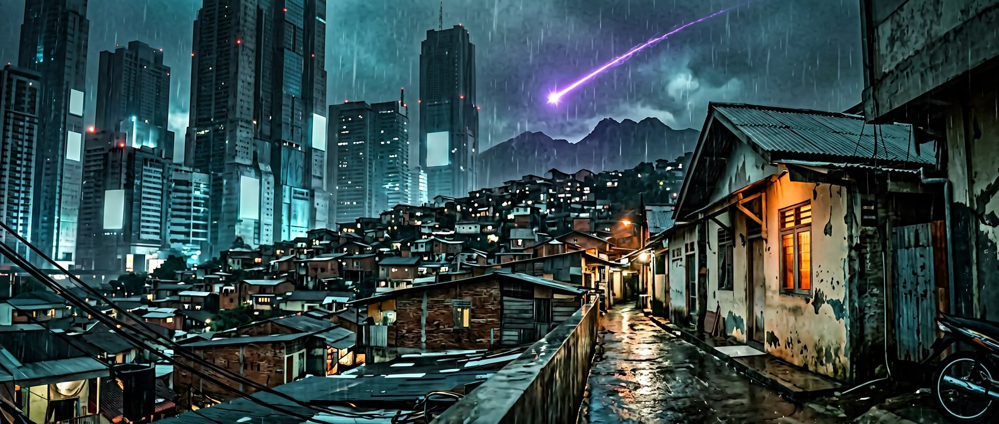

Protagonis
Dhawa Razythan
Anak buruh konstruksi. Pendiam, protektif, tidak pernah mengeluh sakit.

“Kuingin menukar keabadian dengan satu detik waktu di pelukmu, karena pengorbanan terberat bukanlah mati, melainkan terus hidup dengan penyesalan yang tak pernah menua.”
Tahun 2054. Bandung adalah kota yang terjepit di antara Mega-Blok dan kampung-kampung tua. Drone polisi menyisir gang. Air bersih mahal. Keluarga Razythan hidup di kontrakan tanpa implan neural, tanpa mobil, tanpa jaminan apa pun.
Dhawa berusia tujuh tahun ketika ia melihat titik ungu jatuh di balik Gunung Lembang. Keesokan harinya ia menemukan seorang pemuda dengan darah emas dan jubah yang sudah usang. Namanya Kayro Renville. Ia bukan dari sini.
Tidak ada Qi. Tidak ada Dantian. Tidak ada anak ajaib. Yang ada hanya napas, kehendak, dan harga yang harus dibayar setiap kali getaran bergerak di dalam tulang.
Usaha dan pengorbanan, bukan bakat.
Anak buruh konstruksi. Pendiam, protektif, tidak pernah mengeluh sakit.

Krayon biru di jari, kepangan yang longgar, dan tangan kiri yang dingin.

Sepuluh ribu tahun. Core retak. Jatuh ke Lembang membawa tongkat zamrud.

Buruh konstruksi. Pendukung diam-diam. Kalimatnya pendek, penuh makna.

Cepat, praktis, efisien. Nasi goreng setiap pagi. “Makan.”
Dhawa membukanya satu per satu dengan getaran mentah dari napas dan kehendak — bukan dengan Core, bukan dengan Essen. Kultivator waras tidak akan mengajar metode ini. Terlalu menyakitkan.
AkarPusat ke kaki. Menstabilkan.
TerbukaMahkotaPusat ke kepala. Kejernihan.
TerbukaAksiPusat ke tangan kanan. Proyeksi.
ProsesTahanPusat ke tangan kiri.
BelumPilarPusat ke punggung.
BelumPusatPusat ke perut.
BelumSeluruhMenyatukan semua jalur.
Belum